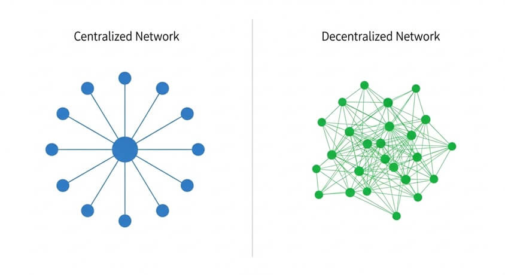
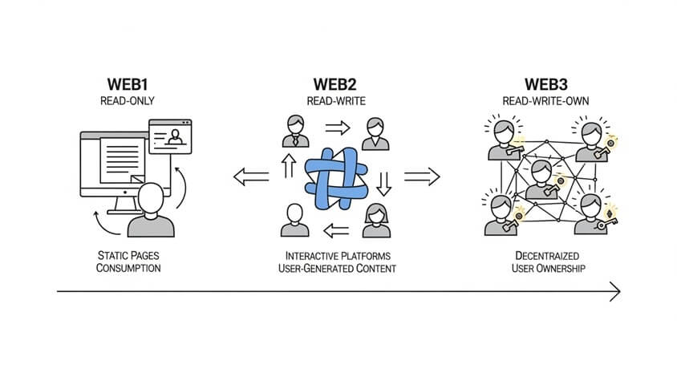

Key Takeaways
- Centralized vs. Decentralized: In a centralized network, one authority or server controls the system (like a spider with a single head), which can create a single point of failure and requires users to trust that authority. A decentralized network spreads control across many participants (like a starfish with no head), making it more resilient if parts fail and reducing the need to place trust in any one party.
- What is Web3: Web3 is the next vision for the internet, following Web1 (static “read-only” websites) and Web2 (interactive “read-write” platforms dominated by big tech). Web3 is often described as a “read-write-own” web, where users can own their data and digital assets. It leverages decentralization (for example, blockchain technology) so that online services—from social media to identity—are controlled by users or communities rather than central companies.
- Benefits of Decentralization: Decentralized systems can offer greater transparency (everyone can verify data openly), user empowerment (individuals control their data, identity, and assets), and improved resilience and security (no single outage or hack can bring down the whole network easily). They are also less prone to censorship, since no central authority can unilaterally remove information or deny access for everyone.
- Challenges of Decentralization: Using decentralized platforms can be more complex—users must manage passwords/keys themselves and navigate less user-friendly interfaces. It can be difficult to coordinate decisions or updates without a central leader, leading to slow governance or conflicting interests. Decentralized networks may face technical hurdles like slower performance or higher costs, and they can have security risks (bugs or vulnerabilities) that are hard to fix quickly across a distributed system.
- Proceed with Caution: Web3 is an evolving idea, not a finished product. There is a lot of hype around decentralization, but many Web3 applications are experimental. New users face risks like irreversible mistakes (e.g., lost passwords or sending funds to the wrong place), scams targeting those unfamiliar with the tech, and unclear legal/regulatory environments. Always approach Web3 projects with careful research and skepticism.
Centralized vs. Decentralized Networks
A centralized network is organized around a single main server or authority that manages data and decisions. All other nodes (users or computers) connect through this central point. For example, a traditional social-media platform or bank uses centralized servers: if that central server goes down or is compromised, the whole service becomes unavailable. Users in a centralized system must place trust in the central entity to operate honestly and securely.
In contrast, a decentralized network has no single controller. Instead, control and data are spread across multiple nodes that work collectively. Each node can make decisions or process transactions, and the network as a whole reaches agreement. If one node fails, the others can continue functioning, so there isn’t a single point of failure. BitTorrent file sharing and blockchain networks like Bitcoin or Ethereum are examples of decentralized systems—they rely on many independent computers rather than one central server.
Analogy: One famous analogy compares a centralized system to a spider and a decentralized system to a starfish. If you cut off a spider’s head, the spider cannot survive—similarly, disabling a central server can collapse a centralized network. But a starfish has no central brain; if you cut a starfish in half, it can regrow and even form two starfish. A decentralized network, like the starfish, can keep working even if one part is removed or fails, because no single node is indispensable.
Trust and resilience: In centralized networks, users rely on the central authority for security and must trust it not to mishandle data. This can be efficient but also makes the system vulnerable—a successful attack on the central server or a bad decision by the authority can impact everyone. Decentralized networks aim to be “trust-minimized,” meaning they use consensus rules and encryption so that participants don’t have to blindly trust any single node. This structure tends to be more resilient: even if one node or part of the network is attacked or fails, the rest can carry on and validate each other’s data. It’s harder for any one failure or compromise to ruin the entire system.
Security trade-offs: Centralized systems concentrate sensitive data in one place, which can simplify security management but also creates a lucrative target for hackers (for instance, a single database breach can leak millions of users’ information). Decentralized systems spread out that risk—there is no single “honeypot” server to attack, and breaking the system might require compromising a majority of the independent nodes at once, which is often more difficult. However, decentralization can introduce new challenges: coordinating security updates or fixes across many operators is harder, and if individual users are responsible for their own security (e.g., managing private keys in a blockchain), mistakes or negligence at the user level can still lead to losses. Weighing these differences, we see that decentralization can improve trust and robustness at a system level, but it shifts more responsibility to the network’s participants.
What is Web3?
The World Wide Web has evolved through different stages. Web 1.0 (roughly 1990s–early 2000s) was the era of static, read-only websites. Most users just consumed information, and only a few people or companies published content. Web 2.0 (mid-2000s to today) introduced a “read-write” web: users can create content and interact through social media, blogs, and cloud apps. However, Web 2.0 became dominated by a few large platforms (think of YouTube, Facebook, Twitter, etc.) that control user data and experiences.
Web3 (sometimes called Web 3.0) is the idea of a decentralized, user-driven version of the internet. It’s often described as the “read-write-own” web. In Web3, ownership and control are distributed back to the users. This means you could own your online identity, your posts, your digital assets, and even a stake in the platforms themselves. How? Web3 uses technologies like blockchain, cryptography, and tokenization to create platforms that aren’t run by a single company, but by a network of users or automated smart contracts.
In practical terms, Web3 envisions online services that work more like public infrastructure and less like private gardens. For instance, in a Web3 social network, your account wouldn’t be just a profile on a company’s server—it could be a personal identity token or address on a blockchain that you control. Your posts or videos might be stored on a decentralized storage network instead of one company’s database. No single corporation could decide to delete your content or ban your account unilaterally, because control is shared among the community of users and enforced by code.
Real-world examples:
- Decentralized social media: Platforms like Mastodon demonstrate a federated approach (many servers run by different people that interconnect) as an alternative to a single corporate platform. On the blockchain side, projects such as Lens Protocol or Farcaster allow social profiles and posts to live on decentralized networks. The goal is that you, the user, own your social identity and content; you could move to a different app interface without losing your followers or posts, since the data isn’t locked in one company’s silo.
- Digital identity: Web3 introduces the concept of self-sovereign identity. Instead of logging in via an email and password stored on each site’s server, you might use a cryptographic wallet or identity token that proves “you are you” without revealing extra personal information. For example, an Ethereum address or a decentralized identity (DID) can serve as a single login that you control. You keep a secret key that lets you prove your identity across various services. No central provider (like Google or Facebook) is needed to vouch for you, which means less risk of a single company locking you out or profiting from your personal data.
- Decentralized finance (DeFi): In the financial realm, Web3 has spawned DeFi applications where people can trade, lend, or borrow assets on blockchain networks without banks or brokers. While this module focuses on internet systems broadly, DeFi is a concrete example of Web3’s ethos: anyone with a crypto wallet can access services like loans or trading on decentralized exchanges, with rules enforced by transparent smart-contract code instead of by a bank’s policies.
All of these examples share a theme: control is distributed among users and secured by code, rather than concentrated in a single company’s hands. It’s an ambitious vision, and many Web3 apps are in early stages. As of today, the Web3 experience often requires technical know-how and is being improved continually. Nonetheless, the evolution from Web1 to Web2 to Web3 represents a shift from an internet dominated by central authorities to one where users have more direct power and ownership. Advocates hope this will create a more open, innovative, and equitable internet ecosystem in the long run.
Benefits and Challenges of Decentralization
Decentralized systems bring notable advantages, but they also come with significant trade-offs. Below we outline some key benefits alongside the major challenges of decentralization, with examples to illustrate each point:
Benefits
- Transparency & Trust: Most decentralized ledgers (like public blockchains) are openly viewable, meaning anyone can audit transactions or changes. This transparency can reduce corruption and build trust since no secret tampering can go unnoticed. Example: A charity could use a blockchain to show how funds are spent; donors can see the money flow to its destination, ensuring accountability. (Note: While transparency is a benefit, it also raises privacy questions—personal data may need to be protected even on an open ledger.)
- User Empowerment & Ownership: Decentralization often gives users direct control over their data, assets, and interactions. Instead of relying on third parties, individuals hold their own cryptographic keys that grant access to their accounts or files. Example: An artist can mint and sell digital art as an NFT on a decentralized marketplace, earning income without a big company taking a large cut. The artist’s relationship with fans isn’t controlled by a platform’s algorithm—if the marketplace goes away, the artist still holds the proof of ownership and can trade elsewhere.
- Resilience & Fault Tolerance: Decentralized networks have no single point of failure. Because data and operations are spread across many nodes, the system can withstand outages or attacks better. Example: In a decentralized storage network, copies of your files are stored on multiple nodes globally. Even if one server hosting a piece of your file crashes, you can still retrieve the file from other nodes.
- Censorship Resistance: With no central gatekeeper, it’s harder for any authority to censor information or block users across an entire decentralized network. Example: On a decentralized social media platform, no single company can decide to delete a post or ban a user for all others—any such action would typically require community consensus or is technically infeasible.
Challenges
- Usability & Complexity: Decentralized platforms can be intimidating for average users. Tasks like setting up a crypto wallet, managing private keys, or using command-line interfaces are more complex than using a typical Web2 app with a simple login. Example: If someone forgets the password to their cryptocurrency wallet, there is no central customer support to reset it; their funds could be locked forever.
- Governance & Decision-Making: Making decisions or changes in a decentralized project can be slow and contentious. Communities often use voting systems or consensus mechanisms to decide on updates, which can lead to gridlock or “forks” (splits into two networks) if participants disagree strongly. Example: A decentralized social network might struggle to quickly remove illegal or harmful posts, because action may require agreement from many independent node operators or a community vote.
- Security Risks & Bugs: Software (smart contracts) that runs decentralized apps can have vulnerabilities, and if hackers exploit a flaw, there may be no quick way to shut down the attack centrally. Example: Several decentralized finance platforms have been hacked due to bugs, leading to large losses that could not be reversed.
- Scalability & Efficiency: Decentralized networks can be slower or more expensive than centralized ones, especially in early stages. Coordinating many distributed nodes can require more time and computing power. There’s active research into new consensus algorithms and “layer 2” solutions, but many Web3 services today still struggle with high fees or slow performance during peak usage.
Important Risks & Disclaimers
- Hype vs. Reality: Web3 is still an idea in progress; be cautious of exaggerated claims and marketing buzz.
- User Responsibility: Decentralization places more control and more risk on individual users—lost keys or scams are often irreversible.
- Decision-Making Hurdles: Decentralized governance can be slow or contentious, making content moderation and updates challenging.
- Security Vulnerabilities: Bugs in smart contracts or malicious attacks can lead to permanent losses; code audits and community reputation matter.
- Regulatory Uncertainty: Laws vary by country and can change; decentralized apps may face new requirements or restrictions.
The following links are provided for educational and informational purposes only. Literacy & Innovation in Financial Technology Alliance (LIFT) does not endorse any of the organizations, products, services, or opinions presented on these external sites. LIFT is not responsible for the accuracy or content of external sites. We encourage you to conduct your own research.
Further Reading & Sources
- “What is Web3 and Why Is It Important?” – Ethereum Foundation
- “Web 3.0 Explained, Plus the History of Web 1.0 and 2.0” – Investopedia
- “The Case for a Decentralized Internet” – TED Talk
- “What Is Web3? (Explainer)” – McKinsey & Company
- “The Decentralized Internet of the Future Explained” – freeCodeCamp